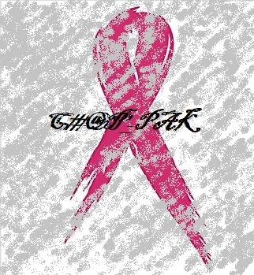

CHEMOTHERAPY(SIDE-EFFECTS):(click here)
Q:What causes side effects?
Answer: - Cancer cells tend to grow fast, and chemo drugs kill fast-growing cells. But because these drugs travel throughout the body, they can affect normal, healthy cells that are fast-growing, too. Damage to healthy cells causes side effects. Side effects are not always as bad as you might expect, but many people worry about this part of cancer treatment.
- The normal cells most likely to be damaged by chemo are :
- Blood-forming cells in the bone marrow.
- Hair follicles.
- Cells in the mouth, digestive tract, and reproductive system.
Some chemo drugs can damage cells in the heart, kidneys, bladder, lungs, and nervous system. Sometimes, you can take medicines with the chemo to help protect your body's normal cells. There are also treatments to help relieve side effects.
Doctors try to give chemo at levels high enough to treat cancer, while keeping side effects at a minimum. They also try to avoid using multiple drugs that have similar side effects.
Q:What do I need to know about side effects?
Answer:- Every person doesn't get every side effect, and some people get few, if any.
- The severity of side effects (how bad they are) varies greatly from person to person. Be sure to talk to your cancer care team about which side effects are most common with your chemo, how long they might last, how bad they might be, and when you should call the doctor's office about them.
- Your doctor may give you medicines to help prevent certain side effects before they happen.
- Some chemo drugs cause long-term side effects, like heart or nerve damage or fertility problems. Still, many people have no long-term problems from chemo. Ask your doctor if the chemo drugs you’re getting have long-term effects.
While side effects can be unpleasant, they must be weighed against the need to kill the cancer cells.
- Be sure to talk to your cancer care team about which side effects are most common with your chemo, how long they might last, how bad they might be, and when you should call the doctor's office about them.
Q:How long do side effects last?
Answer:- Many side effects go away fairly quickly after treatment ends, but some may take months or even years to completely go away. The time it takes to get over some side effects and get your energy back varies from person to person. It depends on many factors, including your overall health and the drugs you were given.
- Many side effects go away fairly quickly, but some might take months or even years to go away completely. Sometimes the side effects can last a lifetime, such as when chemo causes long-term damage to the heart, lungs, kidneys, or reproductive organs. Certain types of chemo sometimes cause delayed effects, such as a second cancer that may show up many years later.
- People often become discouraged about how long their treatment lasts or the side effects they have. If you feel this way, talk to your cancer care team. You may be able to change your medicine or treatment schedule. They also may be able to suggest ways to reduce any pain and discomfort you have.
Q:What are common side effects?
Answer:- Most people worry about whether they will have side effects from chemo, and, if so, what they will be like. Here are some of the more common side effects caused by chemotherapy:
- Fatigue
- Hair loss
- Easy bruising and bleeding
- Infection
- Anemia (low red blood cell counts)
- Nausea and vomiting
- Appetite changes
- Constipation
- Diarrhea
- Mouth, tongue, and throat problems such as sores and pain with swallowing
- Nerve and muscle problems such as numbness, tingling, and pain
- Skin and nail changes such as dry skin and color change
- Urine and bladder changes and kidney problems
- Weight changes
- Chemo brain, which can affect concentration and focus
- Mood changes
- Changes in libido and sexual function
- Fertility problems
Q:Chemotherapy drug interactions and side effects:
Answer: When looking at how best to combine chemo drugs, doctors must look at interactions between chemo drugs and other medicines the person is taking, including over-the-counter medicines, vitamins, and supplements. These interactions may make side effects worse and affect how well chemo drugs work.
"It's important that you tell your doctor about all medicines, including over-the counter medicines, vitamins, herbal or dietary supplements you are taking - even if you only take them "as needed :".
For instance, platelets help blood clot and prevent bleeding. Many chemo drugs lower the number of platelets for a time. Taking aspirin or other related drugs can also weaken blood platelets. This is not a problem for healthy people with normal platelet counts. But if a person has low platelet counts from chemo, this combination might put them at risk of a serious bleeding problem.
Your doctor can talk with you about the safety of using other medicines, vitamins, and supplements while you are being treated for cancer.
Q:How vitamins affect chemotherapy drugs:
Answer:Many people want to take an active role in improving their overall health. They want to help their body's natural defenses fight the cancer and speed up their recovery from chemo.
Because most people think of vitamins as a safe way to improve health, it's not surprising that many people with cancer take high doses of one or more vitamins. But some vitamins might make chemo less effective.
Certain vitamins, such as A, E, and C act as antioxidants. This means that they can prevent formation of ions (free radicals) that damage DNA. This damage is thought to have an important role in causing cancer.
Some chemotherapy drugs (as well as radiation treatments) work by producing these same types of free radical ions. These ions damage the DNA of cancer cells so the cells are unable to grow and reproduce. Some scientists believe that taking high doses of antioxidants during treatment may make chemo or radiation less effective.
Few studies have been done to fully test this theory. But until more is known about the effects of vitamins on chemo, keep these points in mind:
- If your doctor has not told you to take vitamins, it's best not to take any.
- A simple multivitamin is probably OK for people who want to take a vitamin supplement, but always check with your doctor first.
- It's safest to avoid taking high doses of antioxidant vitamins or supplements during cancer treatment. Ask your doctors if and when it might be OK to start such vitamins after treatment.
- If you are concerned about nutrition, you can usually get plenty of vitamins by eating a well-balanced diet. See Nutrition for People With Cancer to learn more about nutrition during and after cancer treatment.
Q:When to call your cancer care team about side effects from chemotherapy:
Answer:While you are getting chemotherapy, you will probably notice every physical change and imbalance. Do not take any physical symptoms you have lightly.
Some side effects are short-lived and minor, but others may be a sign of serious problems. You should not be the judge. Make sure you know how to reach someone on your team any time, including after hours, weekends, and holidays.
Contact your cancer care team right away if you have any of the following symptoms during chemo treatment:
- A fever of 100.5 Farenheit or greater (taken by mouth)
- Bleeding or unexplained bruising
- A rash or allergic reaction, such as swelling of the mouth or throat, severe itching, trouble swallowing
- Intense chills
- Pain or soreness at the chemo injection site or catheter site
- Unusual pain, including intense headaches
- Shortness of breath or trouble breathing.
- Long-lasting diarrhea or vomiting
- Bloody stool or blood in your urine